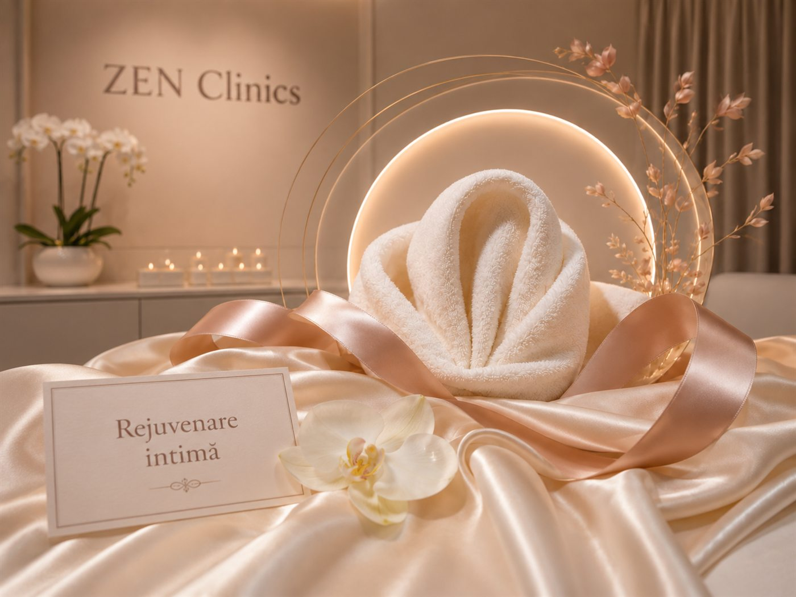

Confort local
Poate fi discutată când există uscăciune, senzație de disconfort sau sensibilitate locală.

Estetică ginecologică
Un protocol discret pentru confort, hidratare și calitatea țesuturilor intime, stabilit doar după evaluare medicală.
Discret și medical
Rejuvenarea intimă poate fi recomandată pacientelor care observă uscăciune, disconfort local, sensibilitate, laxitate ușoară a țesuturilor sau modificări apărute după naștere, fluctuații hormonale ori înaintarea în vârstă.
La ZEN Clinics, parcursul începe cu o discuție discretă și o evaluare medicală. Medicul stabilește dacă este potrivit un protocol minim invaziv, o abordare etapizată sau o altă recomandare ginecologică.
Cadru vizual


Potrivire
Indicația finală se stabilește în urma consultației. Simptomele intime pot avea cauze diferite și trebuie evaluate medical înainte de orice protocol.
Poate fi discutată când există uscăciune, senzație de disconfort sau sensibilitate locală.
Unele paciente solicită evaluare după sarcină sau naștere, pentru tonus și calitatea țesuturilor.
Perimenopauza, menopauza sau alte modificări hormonale pot influența hidratarea și elasticitatea locală.
Parcurs
Pacienta explică simptomele, istoricul, obiectivele și eventualele tratamente anterioare.
Medicul verifică indicațiile, contraindicațiile și dacă este nevoie de investigații suplimentare.
Se stabilesc pașii, numărul orientativ de ședințe, recomandările și limitele realiste.
Evoluția se urmărește atent, iar recomandările se ajustează în funcție de răspunsul individual.
Obiective
Rezultatele diferă de la o persoană la alta. Procedura nu înlocuiește tratamentul unei afecțiuni ginecologice și nu se recomandă fără evaluare.
Poate susține confortul local atunci când uscăciunea este una dintre preocupări.
Protocolul poate urmări îmbunătățirea calității țesuturilor, în funcție de indicație.
Un plan medical clar poate reduce anxietatea și poate reda confortul în activitățile zilnice.
Detalii importante
Informațiile de mai jos sunt orientative. Recomandarea finală se stabilește numai după consultație și evaluare medicală.
Rejuvenarea intimă poate fi luată în calcul pentru confort local, hidratare, calitatea țesuturilor sau modificări funcționale ușoare, dacă medicul confirmă indicația.
Infecțiile active, sarcina, anumite afecțiuni locale sau tratamentele recente pot necesita amânare, investigații sau o altă conduită.
Recomandările după procedură pot include igienă locală atentă, evitarea iritațiilor și respectarea perioadei indicate de medic pentru reluarea activităților intime.
FAQ
Doar consultația poate stabili indicația. Medicul evaluează simptomele, istoricul, eventualele contraindicații și obiectivul realist.
Numărul de ședințe depinde de protocol, indicație și răspunsul individual. Planul se discută înainte, cu pași și așteptări clare.
Nu. Rejuvenarea intimă se discută în context medical și poate necesita consult, investigații sau tratament ginecologic separat, dacă medicul consideră necesar.
Experiența
La ZEN Clinics, frumusețea ta este înțeleasă în profunzime. Îmbinăm știința, arta și empatia pentru rezultate care te reprezintă.
Consultație
Completează formularul, iar echipa te contactează pentru o programare și pentru confirmarea detaliilor.
Contactează-ne